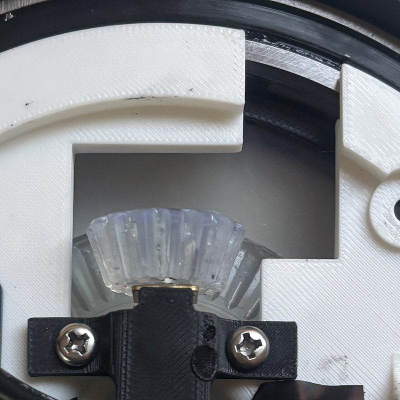
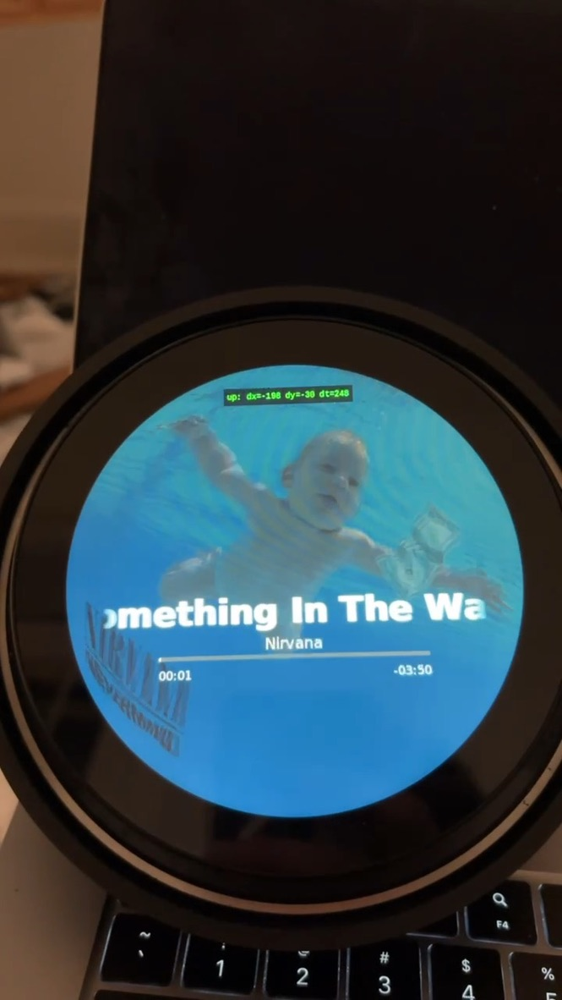
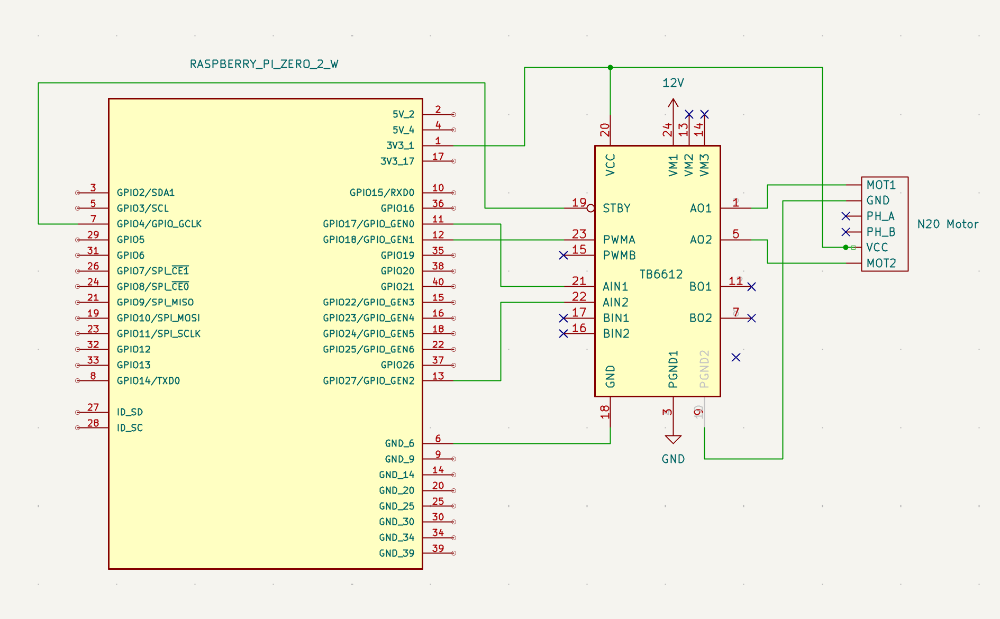
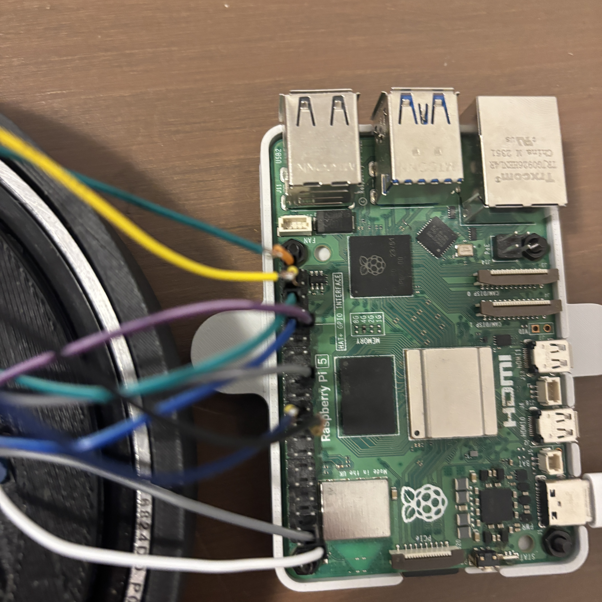
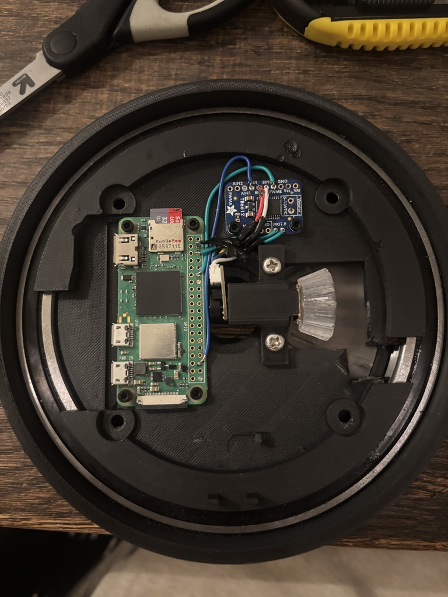
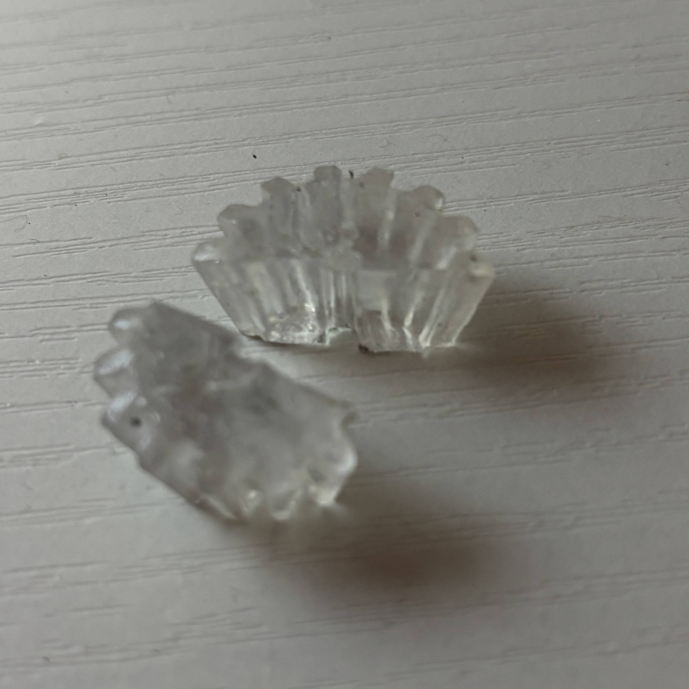
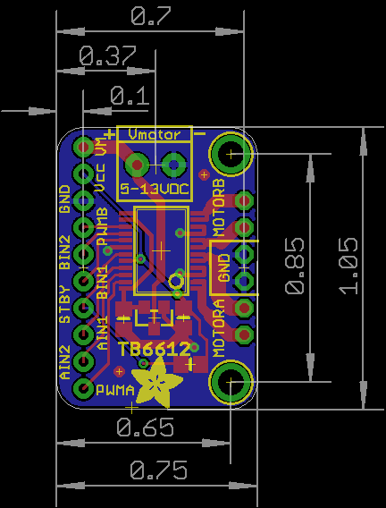

See it in Action
How It Works
The main concept is simple: a stationary wall-mounted display with an outer enclosure that spins while music plays. This separates the build into two main components: the inner display and electronics, and the outer spinning encoder wheel.
The application polls Spotify to detect whether the linked account is playing music. If it is, the display shows information about the current song, and the motor spins the wheel along with the music. If the user resists the motor, the wheel stops, letting them turn it by hand to change the volume. After a short pause, the wheel resumes spinning. The user can also pause, play, skip, and go back.
Two SS41F Hall-effect sensors and a ring of magnets in the outer frame form an encoder. The encoder is calibrated when the device starts up and can detect the wheel's relative speed and position.
The wheel is spun by an N20 DC motor through a TB6612 motor driver, with the PWM frequency tuned to reduce motor whine. N20s often come with encoders preinstalled, so you may be wondering why I built the encoder above. Trying to use the N20 encoder was imprecise and unreliable when the motor was turned off, as the encoder had to deal with the wheel rotation through gear backlash. It was much more accurate to measure the rotation at the source by turning the outer wheel into an encoder itself.
The wheel is powered by two cords fed through the wall: a 12V supply for the motor and a 5V USB-C cord for the Pi. Future creators could get this down to a single cord, but I didn't want to risk bricking another Raspberry Pi by overpowering it with 12V so late in the project.
Build Process
This section provides a high-level overview of my design and build process. If you want a more in-depth look at the internals, please see the Software and Hardware sections.
I did all of the 3D modeling myself, in either SolidWorks or Shapr3D (an iPad-compatible CAD app). Mating parts were press-fit wherever possible, with a 0.2 mm gap to tolerate print error. This kept the number of assembly parts down. Press fits weren't an option for the electronics, so I used heat-set inserts to give the inner plates durable metal screw threads. It was a priority to keep all screws internal for a clean finished product. All 3D models are available on the project GitHub.
Most of my iteration on the 3D model went into making room for wiring (not shown in the models). It was hard to find slim cords (i.e., no excess overhang on the connectors) that fit in the small internal pocket. I used 90° cords where possible, and where I couldn't, I designed negative space around the cord. The image shows one such cutout: I couldn't find a slim mini-HDMI cord, so I modeled around the one I had. In another world I could have skipped this whole process by talking to the display over DSI, but the Raspberry Pi doesn't support this interface types.
I made many changes throughout the build process: a few drastic, most small refinements. Here are some highlights:
- Swapping the Raspberry Pi 5 for a Raspberry Pi Zero 2 W (more on why in What Went Wrong).
- Replacing the locking, modular outer casing (see Initial outer casing below) with a simple two-piece press-fit design. This cut print time, loosened tolerance requirements, and removed complexity where it wasn't needed. I also changed the top to a sleeker spiral.
- Switching from a 1:1 bevel gear and pinion design to a 3:1 bevel gear. This reduced the risk of print errors in the outer gear's small teeth and cut down the number of moving parts that could fail.
Once the build was finished, I needed to make sure it ran reliably over time. To make that practical, I implemented a sleep mode that puts the wheel into a low-power state. It wakes back up when the user plays something on Spotify on the same LAN as the Pi. That let me leave the wheel running in the background of my day-to-day while I watched for any bugs that showed up.
Small note: This project continues an effort by my classmate Adam Rehan and me to recreate the fabled, discontinued Spotify Car Thing (don't listen to Wikipedia — this thing has a cult following). Our initial 3D model of the enclosure is included below, along with a few of my other early designs.


Helpful Links
Software
Designing the software was, as it always is, a balance between taking advantage of the hardware and respecting the constraints of the project. On one hand, I had this sweet display capable of fast refresh and vivid color; on the other, I only had the Pi's 512 MB of RAM to render visuals with, and that same RAM also had to run the backend that connects to Spotify and controls the wheel.
To work within this limit, I decided to serve a prebuilt frontend instead of a live render. Prebuilding drastically reduced how much RAM the application ate up as Node never has to run, which let me use something a bit heavier for my framework: React. React was a perfect fit for the component-based system I intended to design, and it has the added benefit of a huge developer community, which made it easy to find ideas for components.
For the backend I used Flask in Python. Flask makes for a lightweight server that hosts the prebuilt frontend. It also made it easy to call Spotify's API through Spotipy, which was the backend's main job outside of the hardware.
When deciding what actions the user should be able to perform, it quickly became clear that the more features I added, the more could (and would) break. Any failure (API requests getting denied, cover art not rendering properly, swipe animations glitching or not responding at all) would break the seamless UX I was trying to create. So I kept the actions simple: the user can swipe to change songs, start/stop playback, and change the volume.
These operations defined the API routes I'd need on the backend. But first, to make any call to Spotify's API, I needed to be authenticated. This surfaced an annoying reality: Spotify's authentication requires clicking through a verification webpage by hand, which would break the seamless, instant on/off behavior I was after. To get around this, the user verifies their device during initial setup (easiest over SSH), and the token is cached. The token is refreshed through Spotipy automatically.
API calls are routed through Spotipy, and each route returns a JSON response to the frontend, with informative errors when something fails. Notably, there are a couple of nuances in the Spotipy logic for playing in a headless state (i.e., your phone, tablet, or computer is the playback device while the Raspberry Pi "listens in") and for synchronizing the wheel's state with that device. This means polling Spotify for changes, with some extra sauce to stay under their rate limit.
Finally, the frontend calls these routes on user actions and to display the current Spotify status. When fetching the current song's information, the frontend also stores the previous and next songs. This lets the user swipe between songs without a loading delay and creates the illusion that the SpotifyWheel has the queue and history preloaded. Each album cover is warped to better fill the circular display, and the title and playback progress are laid out to mimic Spotify's own car displays.
In terms of interfacing with the hardware, dealing with a circular display and figuring out how to create the volume knob logic were the most 'out of the ordinary' aspects.
Raspberry Pi (and most operating systems, I'd reckon) don't natively support a round display. To get around this I used a square display perfectly encompassing the circle. I then defined a circular border in which everything displayed. To take advantage of the circular display I used a warp effect that distorts the square album covers to full fit on the display. This gives a slight 3D effect to the covers and makes the display pop. One issue I ran into was that Raspberry Pi's default browser, Chromium, requires a minimum of 1 GB of RAM to operate smoothly. With only 512 MB of ram I had to use Cog, a lightweight browser that I could run wihout the Raspberry Pi desktop enabled.
Creating the volume knob logic was less intuitive as I had to find a way to allow the user to spin the wheel to change the volume while it was already spinning. I settled on having the user hold the wheel stationary for 0.5 seconds. This turns off the motor, meaning the user can freely use the wheel as a knob. The encoder tracks the rotation and updates the volume as the user spins, giving realtime feedback. After 2 seconds without an encoder step, the wheel assumes the user is done changing the volume and resumes spinning. In order to avoid Spotify's rate limiter, a maximum of 2 volume change requests can be sent a second. One limitation on this is that some devices, like an iPhone, do not support volume change through Spotify's API. Other devices like MacBooks do support volume change.


Hardware
The hardware is made up of a Raspberry Pi Zero 2 W, a circular 4-in Waveshare touch display, an N20 DC motor controlled by a TB6612 that spins the outer wheel, and two SS41F bipolar Hall-effect sensors that track 16 Ø10×2 mm magnets nested inside the outer wheel. Below is the project's circuit schematic.

The biggest concern when designing the hardware was minimizing how far the display stood off the wall. This was an interesting engineering problem: on top of spinning the wheel reliably, I had to support the display and enclose the rest of the electronics in as tight a space as possible. Initially I planned to put the motor on the center axis, with the display's support running through the middle of the motor, as pictured.

The issue with this design is finding a motor for it. It needs something like a hollow-shaft brushless DC motor, which is hard to come by and expensive. I didn't have the budget for one, but I'd suggest it to future creators, as it simplifies the design and removes potential points of failure (no need for bevel gears). It also avoids the back-EMF created by turning a geared DC motor by hand, although that isn't a huge problem with a motor this small.
To minimize the depth off the wall, I ended up mounting an N20 motor on the radial axis of the wheel, connected to the outer wheel through a 3:1 bevel gear. The motor outputs a maximum of 300 rpm, so at a 3:1 ratio the outer wheel can spin at up to 100 rpm (I usually leave it around 20 rpm, well under the limit). These little N20s produce a surprising amount of torque (0.4 kg·cm), which is more than enough to spin the light PLA outer frame. It's important to keep the spin speed well above the stall zone to avoid burning out the motor. I measured the stall zone at around 35% of motor power (~4.2V), but you should test this yourself. The gears were printed in resin on an SLA printer, which is more precise than FDM-printed PLA. It's often more expensive if you don't have your own SLA printer, but it's worth it to ensure a strong gear mesh.
The motor is driven by a TB6612 motor driver, which offered a few advantages:
- Its power ratings match what an N20 needs
- It accepts 3.3V logic (the Raspberry Pi's native GPIO level)
- It has a separate PWM pin, which makes it easy to set the PWM frequency
- It's cheap and easy to find
Most helpful for my use case was that the TB6612 has two channels, i.e., it can drive two motors at once. This comes in handy when you short one channel of the driver during initial testing (hypothetically, of course). That separate PWM pin also lets you tune the PWM frequency in software, which makes it easy to reduce motor whine and create a quieter product.
As mentioned earlier, I needed an encoder independent of the motor: the motor is off while the user changes the volume, so its built-in encoder can't be used. This is where the two SS41F Hall-effect sensors come in. SS41Fs are bipolar latches: a south pole switches the output on, and a north pole switches it off. Sixteen Ø10×2 mm magnets are evenly spaced (22.5° apart) around the outer ring with alternating poles. The sensors sit 11.25° apart, half the spacing between magnets. They read in quadrature, meaning one sensor trails the other by a quarter of a cycle (a cycle being N→S→N, a 45° rotation). With 8 full cycles per revolution, quadrature gives 32 counts per revolution, which is more than enough for simple volume control and motion detection.
The Hall-effect sensors need to be close enough to the magnets to be triggered by their field. With N42 Ø10×2 mm magnets, the field stays above the sensors' detection threshold out to ~11 mm, but it's better to stay well inside that cutoff. The sensors sit about 8.5 mm from the face of the magnets, so every magnet is detected. A missed magnet would skip a cycle and throw off the rotation count. Below is a sketch of the encoder wheel.
In order to calibrate the wheel and ensure the encoder isn't missing any steps, the user is brought to a calibration screen on startup where they spin the wheel one full revolution by hand.

Everything was soldered by hand, which I wouldn't recommend to future creators. This was meant to be a prototype, so designing a PCB didn't seem worth it. I wanted to keep the ability to modify the design as I went, since I figured some of my initial assumptions wouldn't hold and I'd have to make changes. The trade-off was harder, messier wiring (as seen below). It works for my use case, but it isn't a scalable product as is.




What Went Wrong
As with any hobby project, plenty of mistakes happened on the way to a working product. Here are a few, to show that development is an imperfect process and I am an imperfect creator.
I started the project on a Raspberry Pi 5, but I ended up bricking the entire board during an early motor test by overloading a GPIO pin with 12V. It was an extremely discouraging loss: the price of a Pi 5 had tripled since I bought mine, and buying a new one would have pushed the project's budget to an unreasonable amount. That forced me to pivot to something cheaper: the Raspberry Pi Zero 2 W. This let me keep the same Raspberry Pi OS in a more compact module. I was hesitant to make the switch at first, worried the memory load would be too much for such a small board, but after optimizing the software for the new constraint, it turned out to be a good pivot. As mentioned earlier, it also slimmed the depth off the wall by about 20 mm, since I could tuck the Pi on the same plane as the motor instead of on top of it.
The rest came from trying to get the mechanics working. Since these faults all happened during the same stretch, I like to think of this part of the project as the "no good, very bad, not fun" period. First, while fine-tuning the start and stop mechanics, I snapped the smaller bevel gear in half. That was clumsy of me: I was jerking the wheel with rapid starts and stops, which turned out to be too much for the poor gear. Sadly, replacing it wasn't as simple as reprinting it like some of the other components, because I'd had the bevel gears specially printed in SLA. I no longer had access to the SLA printer I'd originally used, so I had to get a replacement shipped to me (which took two weeks!). A bit impatiently, I considered swapping in a PLA version and even went as far as printing one, but I decided not to use it since it risked breaking even more components.

Next was the motor driver. The same short that fried the Raspberry Pi 5 took out the TB6612 as well. Testing with a multimeter revealed that the internal logic was being bypassed by a near-zero-resistance path: the driver was fried too. Luckily for me, the TB6612 has two motor channels, A and B. Although B was fried, testing showed that A was still intact, so I was able to move the wiring over to the other channel, though not before worrying that I'd have to buy another driver.

Everything great comes in threes, so I should have seen the last mechanical failure coming. When an N20 stalls for too long, it overheats and burns out. During stress testing I left the wheel running continuously while I went to class, and lo and behold, I came back to a stalled, burned-out motor. I'm not proud to admit I burned out a second motor in a similar way. To prevent this from happening again, I added a software failsafe: if the motor has been on for more than 3 seconds without any detected encoder movement, it stops immediately. So far this has solved the burnout problem.
Make It Yourself
If you're looking for a fun challenge, please consider building your own version of this project. My prototype is by no means perfect, but I've done my best to compile everything needed to recreate the SpotifyWheel in the project GitHub. The 3D models, parts list, software, and testing and development documentation are all there. If you feel I've missed anything or you have any questions, please feel free to reach out to me at ryan.1989@osu.edu.